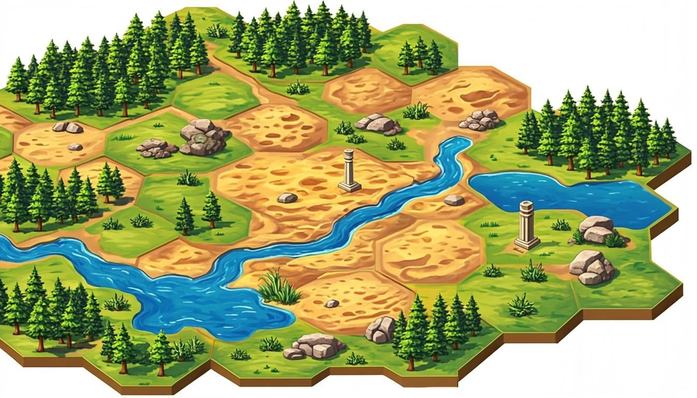

World Conqueror Strategy is a turn-based strategy game where you lead armies across a tactical map. Deploy infantry, tanks, and aircraft. Capture cities to fund your war machine. Outsmart the AI opponent through superior tactics and terrain mastery. Every decision matters - every turn is a battle of wits.
Deep combat system with damage calculations, terrain bonuses, critical hits, and counter-attacks. Position your units wisely for maximum advantage.
Infantry for versatile combat, Tanks for devastating assaults, and Aircraft for unmatched mobility and range. Each fills a critical role.
Plains, Cities, Mountains, Deserts, Forests, and Seas. Each terrain type affects movement, defense, and strategy differently.
Face an AI that pursues your units, exploits terrain, and attacks when it has the advantage. No two games play the same.
Capture cities to generate gold. Control the map to control the economy. Strategic expansion is the path to victory.
Built for touch screens with large tap targets, clean UI, and optimized performance on phones and tablets.
Open GDevelop at editor.gdevelop.io
Import Project - New Project > Import > Upload WorldConquerorStrategy.json
Click Preview - The game runs immediately in your browser!